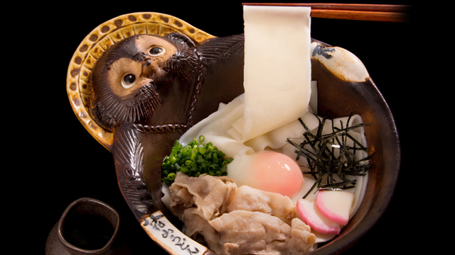
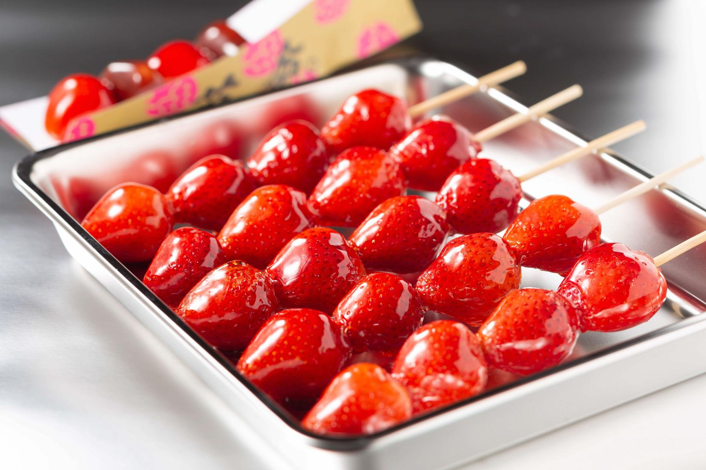
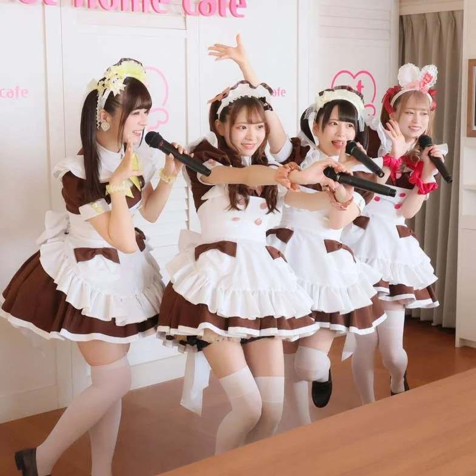

"An iconic landmark in Tokyo, head to Shibuya Scramble Crossing to see upwards of 1,000 people crossing the multi-cornered intersection at a time. Despite converging in mass from all directions, pedestrians skilfully manage to avoid colliding with one another."
"SHIBUYA 109 is a unique fashion building, offering wide selection of the hottest brands and trends. You can find reasonably priced fashion items here. SHIBUYA109 has become Tokyo's fashion hotspot for young Japanese women, and also attracts many foreign visitors."

"Founded in 1894, our unchanging philosophy has been to make the most of local ingredients without doing anything extra. We use our skill and intuition to create authentic udon noodles using high-quality wheat from Gunma Prefecture, which is blessed with a favorable climate and water resources. Please enjoy our traditional udon noodles, which have been passed down for over 130 years."
"We specialize in crafting premium strawberry products. Especially when it comes to Fukuokaʼs Amaou strawberries, no one does it better. With that mindset, we pour our heart into every creation."
"Over 21 years, at-home cafe has grown into an iconic destination, with 13 uniquely designed maid cafes and more than 10 million memorable visits from all over the world. We serve our Masters & Princesses as the top maid cafe where “moe moe kyun” was born!"
 Go Back Home